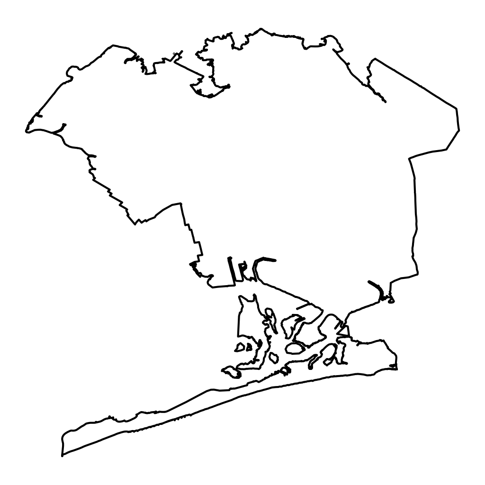

Long Island City Development

Layered narratives in Long Island City: a 2015 deep mapping study of real estate branding, urban rendering, and lived experience in Queens.This project examined competing narratives shaping Long Island City's rapid redevelopment through deep mapping—combining photography, interviews, social media analysis, and real estate marketing materials to trace how developer-led visions contradicted lived experience on the ground. The research revealed the gaps between glossy renderings and actual streetscapes, documenting how urban transformation unfolds as a palimpsest of competing visions where power, perception, and place collide.